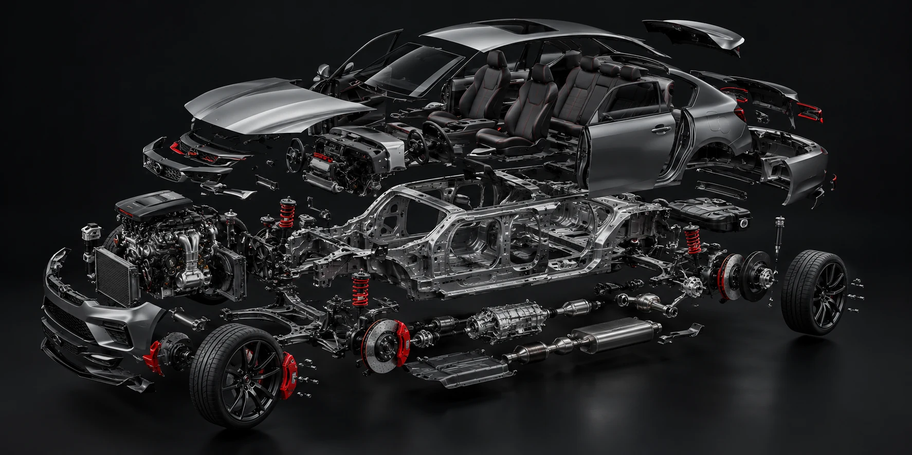

Mecânica em geral
Manutenção e reparos dos principais conjuntos mecânicos do veículo.
Manutenção, freios, suspensão e diagnósticos em Sorocaba. Atendimento próximo, explicações claras e atenção ao seu carro.
Os serviços essenciais, sem complicação.
Manutenção e reparos dos principais conjuntos mecânicos do veículo.
Avaliação de componentes ligados à estabilidade e ao conforto.
Inspeção e cuidados com o sistema de frenagem do seu carro.
Análise do sistema eletrônico e investigação de falhas.
Revisões para acompanhar o estado do veículo antes de imprevistos.
Avaliação de sintomas para identificar a origem do problema.
Cuidado técnico e transparência em cada atendimento.
Investigar a causa do problema antes de recomendar o reparo.
Entender o que foi identificado e quais são os próximos passos.
Atenção aos detalhes durante o atendimento e o serviço.
Uma viagem da cidade até o interior da oficina. Você controla o movimento.
Prévia para aprovação: o trecho aéreo utiliza imagens ainda não liberadas para uso comercial.
Motor, freios, suspensão e eletrônica: conheça os sistemas essenciais.

O conjunto responsável por transformar energia em movimento. Sua manutenção começa por uma avaliação cuidadosa.
Rua Anselmo Todesco, 21 · Vila Colorau · Sorocaba.